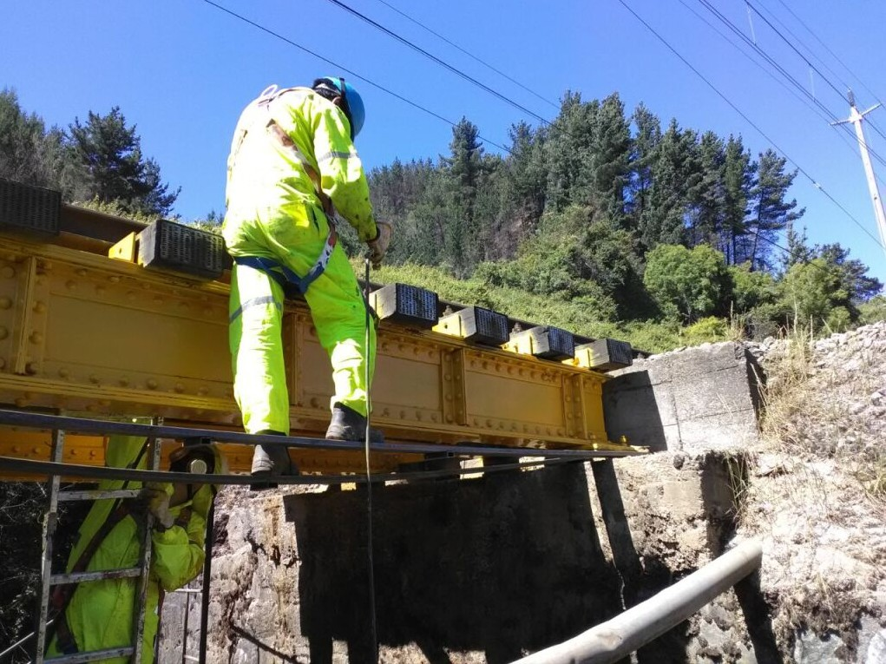

Granallado puentes
Obras civiles menoresSe realizó mantención preventiva a 20 puentes ferroviarios, retirando capas de pintura con técnica de granallado.
Programa de mantención preventiva ejecutado a lo largo del corredor sur entre Concepción y Osorno, abarcando 20 puentes ferroviarios de distintas tipologías estructurales. La intervención consistió en el retiro completo de capas de pintura envejecida mediante granallado mecánico, dejando la superficie metálica preparada para el posterior tratamiento anticorrosivo. Los trabajos se coordinaron con ventanas de operación ferroviaria para minimizar el impacto en el tráfico, e incluyeron acopio y disposición controlada de los residuos generados.